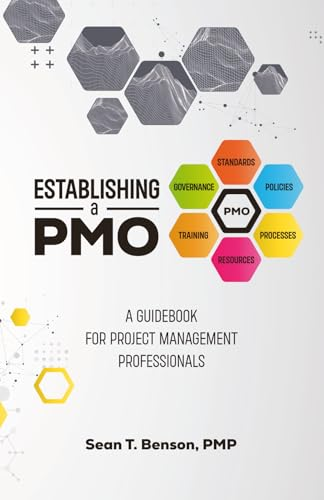

BlackOPS:SLAP
- Series
- BlackOPS, Book 1
- Release
- October 31, 2026
- Format
- Print and ebook
- ISBN
- 979-8-1828-4711-7 (print)
9798182847124 (EPUB)
Catalog
By GySgt (Ret.) Sean T. Benson. Buy BlackOPS:SLAP below, follow the saga at blackops-saga.com, and find official gear at BlackOPS Gear.
Book 2 of the BlackOPS saga. Release July 23, 2027.
Book 3 of the BlackOPS saga. Release December 5, 2027.
Professional

A guide to establishing and nurturing a Project Management Office: governance, strategic alignment, continuous improvement, and adaptability, with real-world insight for project leaders.
Transforming Project, Program, and Portfolio Management Through Artificial Intelligence. Release date to be announced.